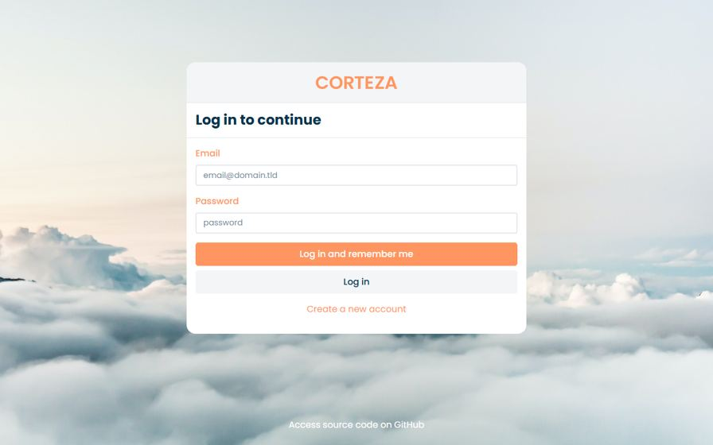
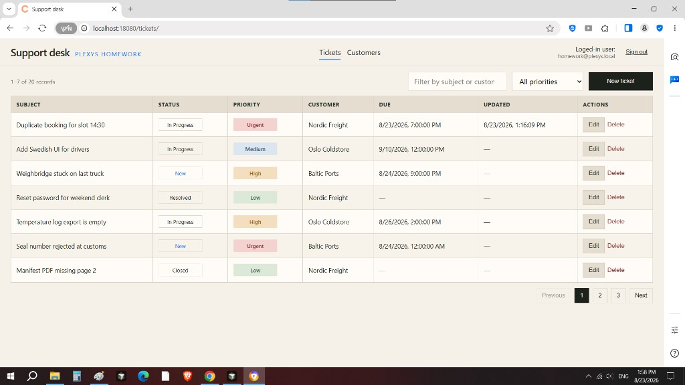
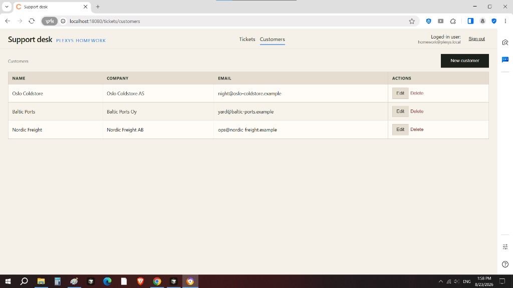

Plexys · Front-end / Full-stack homework
One Corteza 2024.9.9 process serves Auth, the Compose API, Admin, Compose, and this SPA. PostgreSQL 15 stores system data and records. The desk is a first-party webapp (uses same host: localhost:18080) at /tickets, same origin as /auth and /api.
Browser
├── /auth Corteza OAuth2 (login, default-client, tokens)
├── /api/compose records (Bearer token of the signed-in user)
├── /admin Corteza Admin
├── /compose Low Code builder (Part 1)
└── /tickets Vue 3 SPA (Part 2)
│
└── Postgres 15
The SPA sends the user’s access token. Corteza stamps ownedBy, createdBy, createdAt and updatedAt. Those fields are never written from the client.

Figure 1. Local login. The desk reuses this session through the default OAuth2 client.
Version. I ran Corteza 2024.9.9 — the latest stable Docker image that matches the current docs. The exact patch is pinned so a clone always starts the same version.
Serving. Corteza can serve a custom app next to Admin and Compose. I put the built desk in /corteza/webapp/tickets so it uses the same host and the same login as Compose. A separate Vite site on another port would need its own Auth Client and CORS. I did not build the desk as Compose pages — the brief asks for a custom SPA.
Vue 3 vs corteza-vue. The brief asks for Vue 3. The official corteza-vue package still uses Vue 2, so I did not use it. Ticket records go through corteza-js. Login is a small Vue 3 copy of Corteza’s default-client flow (token in memory, refresh in sessionStorage).
UI. PrimeVue for the create/edit and delete dialogs. Tickets are a table so columns are easy to compare. Every action is a visible button.
Namespace Plexys Homework (plexys_homework). System owner and timestamp fields were not re-created. Customer is the bonus related module.
| Module | Field | Type | Required |
|---|---|---|---|
| Support Ticket | Subject | String | Yes |
| Support Ticket | Description | String, multi-line | No |
| Support Ticket | Status | Select: New, In Progress, Resolved, Closed | Yes |
| Support Ticket | Priority | Select: Low, Medium, High, Urgent | Yes |
| Support Ticket | Due Date | DateTime | No |
| Support Ticket | Customer | Record → Customer | No |
| Customer | Name | String | Yes |
| Customer | Company | String | No |
| Customer | No |

Figure 2. Tickets: list, search, priority filter, create / edit / delete.

Figure 3. Customers: related-module CRUD used by the ticket picker.
http://localhost:18080/tickets and sign in as homework@plexys.local / Homework!2026.How to start the stack is in the README. After docker compose up, wait until http://localhost:18080/version shows 2024.9.9.
The first start creates the demo user, the modules, and about 20 tickets. If login fails or the list is empty, run docker compose down -v in corteza/ and start again.
Auth. No extra Auth Client. The desk uses Corteza’s built-in login, same as Compose.
Config. Settings are in corteza/.env.example. After a UI change, run npm run build in spa/ and refresh /tickets. Modules can also be checked in Compose at /compose.
Observed: signup works without email; /version is 2024.9.9; Corteza fills owner and timestamps on create. Assumed: /tickets/auth/callback is served by the SPA, like other Corteza apps.